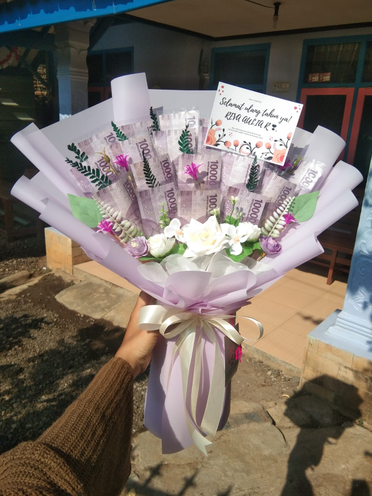

Buket
Tingkatkan kebahagiaan Anda atau sampaikan kasih sayang Anda dengan buket boneka yang lucu dan menggemaskan. Buat momen istimewa lebih berkesan dengan hadiah yang tak terlupakan ini. Temukan pilihan buket boneka kami yang bervariasi untuk mengungkapkan perasaan Anda secara manis.
Buket Boneka
Rayakan prestasi luar biasa seseorang dengan buket bunga indah sebagai kado spesial di hari wisuda mereka. Buat momen ini lebih berkesan dengan hadiah yang penuh makna, memberikan ucapan selamat yang tulus dalam bentuk bunga yang cantik. Pilih buket bunga spesial kami untuk mengiringi mereka dalam perjalanan baru mereka ke masa depan yang cerah.


Buket Uang
Buket uang adalah pilihan yang cerdas untuk membuat hadiah Anda lebih bermakna dan tak terlupakan. Kenapa harus buket uang? Berikut beberapa alasan:
1. Fleksibilitas: Dengan buket uang, penerima dapat menggunakan uang tersebut sesuai dengan keinginannya. Ini memberikan kebebasan penuh dalam memutuskan cara menghabiskan hadiah tersebut.
2. Universal: Uang adalah hadiah yang selalu dihargai, tidak peduli apa kesukaan atau kebutuhan penerima. Ini cocok untuk berbagai kesempatan, seperti ulang tahun, pernikahan, atau momen penting lainnya.
3. Praktis: Buket uang adalah pilihan yang praktis dan efisien. Anda dapat memberikan hadiah uang dengan cara yang kreatif dan indah, membuatnya lebih spesial daripada sekadar memberikan uang tunai.
4. Personalisasi: Anda dapat menyesuaikan buket uang dengan kreativitas Anda sendiri. Tambahkan sentuhan pribadi, pesan, atau hiasan sesuai dengan kesukaan penerima untuk membuatnya lebih personal.
5. Berkelanjutan: Uang dapat diinvestasikan atau digunakan untuk memenuhi kebutuhan jangka panjang. Dengan buket uang, Anda memberikan hadiah yang dapat membantu penerima meraih impian mereka.
Jadi, saat Anda memilih buket uang sebagai hadiah, Anda memberikan penerima kesempatan untuk memiliki kontrol penuh atas hadiahnya, sambil tetap memberikan sentuhan pribadi yang istimewa.

Buket Snack
Pilih buket snack untuk memberikan hadiah yang sempurna dalam berbagai kesempatan. Kenapa harus memilih buket snack? Berikut adalah beberapa alasan:
1. Kesenangan Ganda: Buket snack adalah gabungan sempurna antara hadiah yang berguna dan lezat. Menerima banyak camilan favorit dalam satu paket adalah kesenangan ganda!
2. Variasi Tanpa Batas: Dengan buket snack, Anda dapat mencampur dan mencocokkan berbagai jenis camilan, mulai dari cokelat, keripik, kacang-kacangan, hingga permen, sehingga Anda dapat menyesuaikannya dengan preferensi penerima.
3. Cocok untuk Semua Usia: Buket snack adalah hadiah yang cocok untuk semua usia, dari anak-anak hingga dewasa. Ini membuatnya menjadi pilihan yang aman dan serbaguna.
4. Tampilan yang Menawan: Buket snack seringkali dirancang dengan kreativitas, membuatnya menjadi hadiah yang indah dan menarik secara visual. Mereka bisa menjadi dekorasi meja yang cantik atau bahkan menjadi pusat perhatian dalam pesta.
5. Hadiah Universal: Buket snack bisa digunakan untuk berbagai kesempatan, seperti ulang tahun, pernikahan, Hari Ibu, Hari Ayah, atau bahkan sekadar sebagai ungkapan terima kasih. Ini adalah hadiah yang selalu relevan.
Dengan buket snack, Anda memberikan hadiah yang memanjakan selera dan membuat orang tersenyum. Buket snack adalah pilihan yang tepat untuk menciptakan momen berkesan dalam hidup orang yang Anda cintai.


.webp)
.jpg)